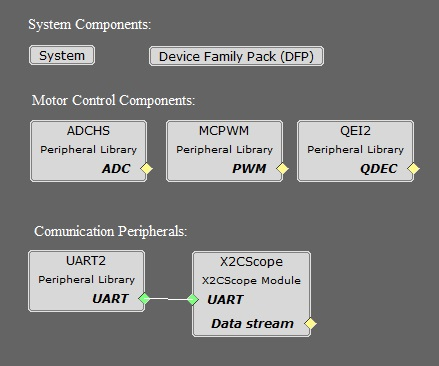
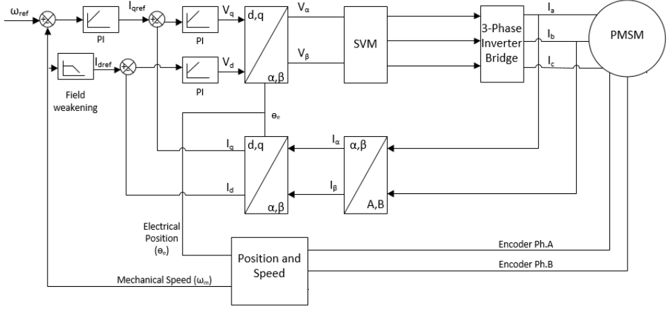
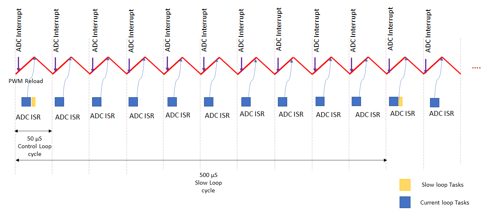

PMSM FOC using Quadrature Encoder
This example application shows how to control the Permanent Magnet Synchronous Motor (PMSM) with Quadrature Encoder based Field Oriented Control (FOC) on a PIC32MK Micro-controller.
Description
Permanent Magnet Synchronous Motor (PMSM) is controlled using Field Oriented Control (FOC). Rotor position and speed is determined using Quadrature Encoder. Motor start/stop operation is controlled by the switch and motor speed can be changed by the on-board potentiometer. Waveforms and variables can be monitored runtime using X2CScope.
Key features enabled in this project are:
- Dual shunt current measurement
- Speed control loop
- Field weakening
MHC Project Configurations

-
ADCHS Peripheral:
The ADCHS is used to measure analog quantities. Four channels are used to measure the Phase Current U, the Phase Current V, the DC Bus Voltage and the Potentiometer. Conversion is triggered at the PWM (zero match + offset of the switch delay)
-
MCPWM Peripheral:
This peripheral is used to generated three phase synchronous PWM waveforms. Fault functionality is also enabled to switch off the output waveforms asynchronously.
-
QEI Peripheral:
This peripheral is used to decode the rotor position and speed from quadrature encoder signals.
-
X2CScope:
This component adds X2C scope protocol code. This uses UART to communicate to the host PC. X2CScope allows user to monitor variables runtime.
-
UART Peripheral:
The UART is used for X2CScope communication to observe graphs and variable values in run time
Control Algorithm
This section briefly explains the FOC control algorithm, software design and implementation. Refer to Application note AN2520 for the PLL estimator based sensor-less FOC technique in detail.
Field Oriented Control is the technique used to achieve the decoupled control of torque and flux. This is done by transforming the stator current quantities (phase currents) from stationary reference frame to torque and flux producing currents components in rotating reference frame using mathematical transformations. The Field Oriented Control is done as follows:
- Measure the motor phase currents.
- Transform them into the two phase system (a, b) using the Clarke transformation.
- Calculate the rotor position angle.
- Transform stator currents into the d,q-coordinate system using the Park transformation.
- The stator current torque (iq) and flux (id) producing components are controlled separately by the controllers.
- The output stator voltage space vector is transformed back from the d,q-coordinate system into the two phase system fixed with the stator by the Inverse Park transformation.
- Using the space vector modulation, the three-phase output voltage is generated.
Quadrature Encoder based FOC :
Rotor position and speed are determined using quadrature encoder sensor. TC peripheral is configured in QDEC position mode. It counts the decoded quadrature pulses which is the position of the rotor. In this example, counter is a free running counter and software logic is implemented to get the exact angular position from the count. Speed is calculated by measuring the number of quadrature pulses in a fixed time interval.
Rotor is first aligned to a known position by exiciting either d-axis or q-axis. And then motor is controlled in a closed loop there after.
The following block diagram shows the software realization of the FOC algorithm.

Software Design
Software Design
- PMSM FOC Control loop is implemented in the ADC result ready interrupt. Refer to the flow chart given below.
- ADC channel conversion is triggered by the PWM overflow/zero match event. This trigger point could vary based on the current measurement techniques and MCU PWM IP implementation.
- ADC interrupt frequency depends on the PWM frequency.
- Slow loop task is executed 10 times slower than ADC interrupt. Polling of switches for user inputs and reference speed calculation is handled in the slow loop task.
Timing Diagram

Flow Chart

State Machine
- Idle:
In this state, control waits for the switch press.
- Flying Start:
In this state, the control algorithm detects if the motor is freewheeling. If the motor’s freewheeling speed is above the minimum Flying Start Detect speed and in the same direction as the command direction, the state machine directly enters in to “Closed Loop” state.
However, if the freewheeling speed is less than minimum Flying Start Detect speed, the control algorithm attempts to passive brake the motor by applying pulses of “NUll Vectors”.
If the freewheeling speed is more than the minimum Flying Start Detect speed but in the opposite direction of the command direction, the control algorithm attempts to active brake the motor by regenerative braking (if enabled). Once the motor speed falls below the minimum Flying Start Detect speed, the control algorithm attempts to passive brake the motor by applying pulses of “NUll Vectors”.
- Field Alignment:
Rotor is aligned to known position at D-axis or Q-axis by applying a pre-defined value of the current for a pre-defined length of time. The magnitude of the current and the length of the time for which it is applied depends upon the electrical and mechanical time constant of the PMSM motor drive. Electrical time constant of the motor is a function of R and L values of the motor windings, whereas the mechanical time constant of the motor drive is primarily a function of the static load on the motor shaft.
- Open Loop:
This state is applicable to sensorless position feedback methods. In this state, the speed of the PMSM motor is gradually ramped up using an open loop control. During this mode, the rotor angle is derived from the asserted open loop speed reference. This derived rotor angle would be lagging from the actual rotor angle. The speed is ramped up linearly to a minimum value required for the PLL estimator to estimate the electrical speed of the PMSM motor with sufficient accuracy. Rotor angle information is obtained by integrating the estimated electrical speed of the motor.
- Closing Loop:
In this state, control waits for stabilization time.
- Closed Loop:
Control switched to closed loop and rotor angle is obtained from the configured position feedback method.
Code Structure

Configurations:
- mc_userparameters.h contains the user configurations.
- mc_derivedparameters.h contains the calculated values used in the code.
- mc_pmsm_foc_common.h - common data structures and defines
PMSM_FOC:
- mc_pmsm_foc.c/h - PMSM FOC algorithm interface file
Interrupts:
- mc_control_loop.c - Control loop is implemented in the ADC result ready ISR.
- mc_errorhandler.c - PWM fault ISR to take corrective action on over-current
Control library:
- mc_lib.c/h - FOC library
- mc_picontroller.c/h - PI controller implementation
- mc_pwm.c/h - Space Vector modulation (SVM) and updating PWM duty cycles
- lib_mc_flyingstart.a - Flying Start Control Library
Control Middleware:
- mc_speed.c/h - Calculate the reference speed
- mc_rotorposition.c/.h - Calculate the position and speed of the rotor
- mc_voltagemeasurement.c/h - Get the DC Bus voltage
- mc_currentmeasurement.c/h - Get the motor phase currents
HAL:
- mc_hal.h - Hardware Abstraction Layer to interact with PLIBs
2. SAMC21 and PIC32CM MC
- PMSM FOC Control loop is implemented in the ADC result ready interrupt. Refer to the flow chart given below.
- ADC channel conversion is triggered by the PWM overflow/zero match event. This trigger point could vary based on the current measurement techniques and MCU PWM IP implementation.
- For bandwidth constraints, the FOC is executed every alternate PWM cycle
- Slow loop task is executed in every 10ms in the task process. Polling of switches for user inputs is handled in the slow loop task.
Timing Diagram

Flow Chart

State Machine
- Idle:
In this state, control waits for the switch press.
- Field Alignment:
Rotor is aligned to known position at D-axis or Q-axis by applying a pre-defined value of the current for a pre-defined length of time. The magnitude of the current and the length of the time for which it is applied depends upon the electrical and mechanical time constant of the PMSM motor drive. Electrical time constant of the motor is a function of R and L values of the motor windings, whereas the mechanical time constant of the motor drive is primarily a function of the static load on the motor shaft.
- Closed Loop:
Control switched to closed loop and rotor angle is obtained from the configured position feedback method.
Code Structure

Configurations:
- mc_userparameters.h contains the user configurations.
PMSM FOC Application:
- mc_pmsm_foc.c/h - PMSM FOC algorithm interface file
Interrupts:
- mc_function_coordinator.c - Initializes and coordinates motor control ISR and slow task processes
- mc_error_handler.c - PWM fault ISR to take corrective action on over-current
Control Middleware:
- mc_motor_control.c/h - Implements the motor control state machines.
Control library:
- mc_start_up.c/h - Implements the initial field alignment and open loop start-up profile.
- mc_speed_control.c/h - Calculate and regulates the reference speed
- mc_current_control.c/h - Controls the direct and quadrature axis currents
- mc_rotor_position.c/.h - Calculate the position and speed of the rotor
- mc_voltage_measurement.c/h - Get the DC Bus voltage
- mc_current_measurement.c/h - Get the motor phase currents
- mc_interface_handling.c/h - Manages global variables and data-types
- mc_generic_library.c/h - FOC library
- mc_pwm.c/h - Space Vector modulation (SVM) and updating PWM duty cycles
- mc_ramp_profiler.c/h - Speed reference profiles for user inputs
HAL:
- mc_hardware_abstraction.c/h - Hardware Abstraction Layer to interact with PLIBs
Development Kits
MCLV2 with PIC32MK Family Motor Control PIM
Downloading and building the application
To clone or download this application from Github, go to the main page of this repository and then click Clone button to clone this repository or download as zip file. This content can also be downloaded using content manager by following these instructions.
Path of the application within the repository is apps/pmsm_foc_encoder_pic32_mk .
To build the application, refer to the following table and open the project using its IDE.
| Project Name | Description | Demo User Guide |
|---|---|---|
| mclv2_pic32mk_mcf_pim.X | MPLABX project for MCLV2 board with PIC32MK MCF PIM | MCLV2 with PIC32MK MCF PIM |
| mclv2_pic32mk_mcm_pim.X | MPLABX project for MCLV2 board with PIC32MK MCM PIM | MCLV2 with PIC32MK MCM PIM |
MCHV3 with PIC32MK Family Motor Control PIM
Downloading and building the application
To clone or download this application from Github, go to the main page of this repository and then click Clone button to clone this repository or download as zip file. This content can also be downloaded using content manager by following these instructions.
Path of the application within the repository is apps/pmsm_foc_encoder_pic32_mk .
To build the application, refer to the following table and open the project using its IDE.
| Project Name | Description | Demo User Guide |
|---|---|---|
| mchv3_pic32mk_mcf_pim.X | MPLABX project for MCHV3 board with PIC32MK MCF PIM | MCHV3 with PIC32MK MCF PIM |
| mchv3_pic32mk_mcm_pim.X | MPLABX project for MCHV3 board with PIC32MK MCM PIM | MCHV3 with PIC32MK MCM PIM |